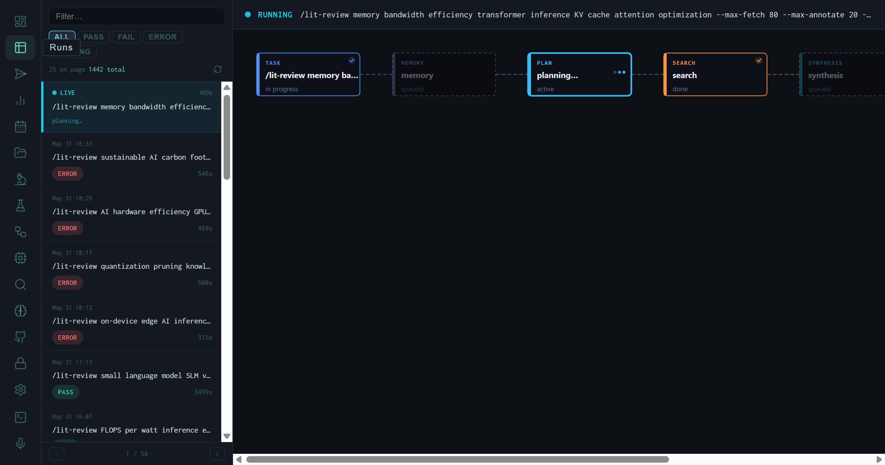
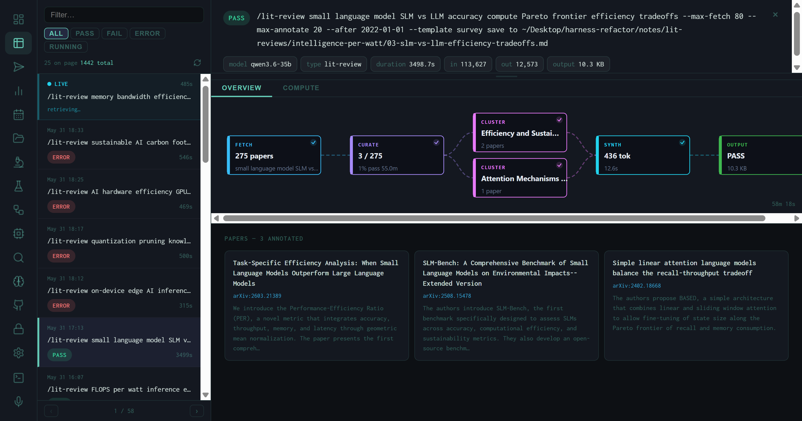
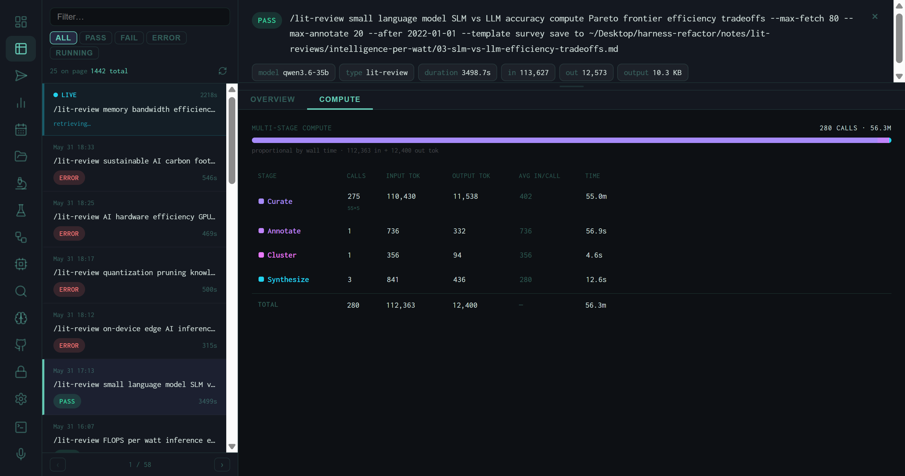
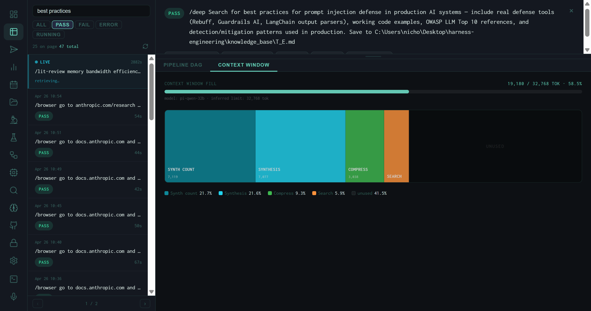
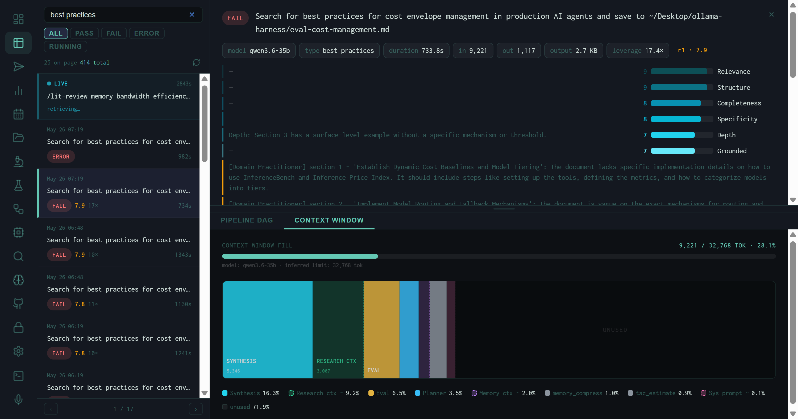
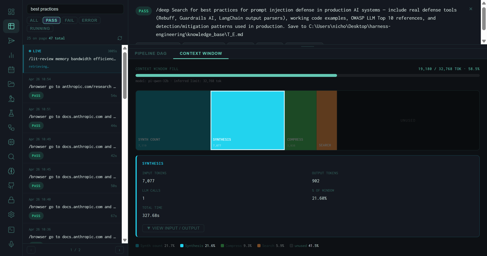

The Runs View: Pipeline Stage Visualization and Live Run Monitoring
1,442 runs, filterable by PASS / FAIL / ERROR, with a live pipeline stage map and a detail panel that breaks down every output into score, clusters, paper count, and token spend.
Every research task the harness executes is a run. The Runs view is the closest thing to a real-time control room for watching that execution: a scrollable list on the left, a pipeline stage diagram in the center, and a full detail panel that opens when you click any completed run. As of this writing the list holds 1,442 entries — lit reviews, best-practices syntheses, OSINT lookups — and the view handles all of them the same way.

A live /lit-review run mid-execution. TASK and SEARCH stages are marked done; MEMORY and PLAN are active. The left sidebar shows the full run queue with timestamp and status badges.
The Run List
The left sidebar is a reverse-chronological list of every run the harness has executed. Four filter tabs — ALL PASS FAIL ERROR — let you narrow to a specific outcome. A free-text filter at the top searches by task string, which is useful when you want to find a specific lit review topic out of hundreds of entries.
Each row shows the timestamp, the full task string (truncated), elapsed time, and the outcome badge. A pulsing green dot marks the currently running job — the live run header above the pipeline diagram also repeats the full task string so you know exactly what the harness is working on at any moment.
The list shown here was captured while a batch of eight lit-review runs was executing. Several returned ERROR (inference timeout during a heavy concurrent load), while the SLM vs. LLM run completed with PASS at 1,435 seconds — just under 24 minutes for a full 80-paper survey synthesis.
The Pipeline Stage Diagram
When a run is active, the center panel renders a horizontal stage map that updates in real time as each stage transitions. The harness pipeline has six named stages:
Each card shows its status inline: done (checkmark, green border), active (pulsing, cyan border), or queued (dim, no border). If a stage errors out, the card turns red and the run moves to ERROR status — but the cards that completed successfully stay green, so you can diagnose exactly where execution broke.
The Detail Panel
Clicking any completed run in the list swaps the center panel to the run detail view. The OVERVIEW tab shows the core output metrics, while the COMPUTE tab breaks down resource usage by stage.

Detail panel for the SLM vs. LLM lit review: score 8.00, 275 papers fetched, 3 clusters, 111,627 input tokens, 12,573 output tokens, 14.1 KB output file.
OVERVIEW Metrics
Score
Wiggum evaluator score on a 0–10 scale. 8.0 is the PASS threshold. Displayed prominently as "Global: X.XX" with color coding — green for pass, red for fail.
Papers
Total papers fetched by the SEARCH stage. For --max-fetch 80 runs the ceiling is 80, but deduplication and Semantic Scholar enrichment can bring this higher or lower.
Clusters
Number of thematic clusters the synthesis stage identified. For the SLM vs. LLM run: 3 clusters out of 275 papers, labeled "Efficiency and Sustai…" and "Attention Mechanisms…"
Token Counts
Input and output tokens for the full run. The 275-paper lit review consumed 111,627 input tokens and produced 12,573 output tokens — roughly a 9:1 compression ratio.
Duration
Wall-clock time from task submission to output file written. The SLM run took 3,408.7 seconds — dominated by the 80-paper fetch and multi-pass synthesis.
Output Size
File size of the final markdown report. 14.1 KB for a 275-paper synthesis is compact — the harness prioritizes information density over length.
Paper Cards
Below the metrics grid, the detail panel renders a card for each annotated paper: title, abstract excerpt, arXiv ID, and the cluster it was assigned to. Scrolling through them gives you a ground-truth view of what the synthesis was actually working from — useful for catching irrelevant papers that inflated the fetch count or checking whether a key paper was included.
The COMPUTE Tab (Lit Review Runs)
The second tab on a lit-review run detail panel is labeled Compute. It replaces the pipeline DAG with a per-stage token and timing table, showing exactly how the inference budget was distributed across the run's LLM calls.

COMPUTE tab for the SLM vs. LLM lit review: 280 total LLM calls consuming 56.3M token-milliseconds. A purple bar spans the full width, proportional to wall time, showing that Curate (275 individual paper reads) dominated.
The table columns are:
The Curate stage dominates both token spend and wall time on any large fetch: 275 papers × ~402 tokens each = 110,430 input tokens and 55 minutes. The synthesis stage that actually writes the output report consumed less than 1% of that time. This ratio is typical — the harness spends most of its budget reading, not writing.
The Context Window Tab (Best Practices & Research Runs)
For non-lit-review run types — best_practices, research, OSINT — the second tab is labeled Context Window instead of Compute. Rather than a per-stage call table, it renders a treemap visualization of how the model's context window was filled.

Context Window tab for a best_practices PASS run on prompt injection defense. Model: pi-qwen-32b, inferred limit 32,768 tokens. Fill: 19,180 / 32,768 • 58.5%. The large unused region (41.5%) shows this run had headroom — no context pressure.
The Fill Gauge
At the top of the tab, a single horizontal gauge reads X / limit TOK • Y%. The limit is inferred from the model name — pi-qwen-32b maps to 32,768 tokens; larger models map to 128k or higher. The gauge color shifts from cyan (under 70%) to amber (70–90%) to red (over 90%), giving an immediate visual signal of context pressure without reading any numbers.
The Treemap
Below the gauge, a horizontal treemap divides the full context limit into colored blocks — one per pipeline stage — sized proportionally to that stage's input token count. Stages that inject pre-built context (memory summaries, compressed prior outputs) are rendered with a dashed border rather than a solid one, labeled "context injection · estimated tokens" in the detail panel.

A cost-envelope best_practices run with lighter context fill (28.1%). More stages are visible here: RESEARCH CTX and MEMORY CTX appear as dashed-border context injection blocks, alongside the active inference stages (SYNTHESIS, EVAL, PLANNER).
The legend at the bottom lists every visible stage with its percentage. Stages that are too narrow to label in the treemap still appear in the legend, so no token spend is invisible.
Clicking a Stage: The Detail Panel
Clicking any block in the treemap selects it and opens a detail panel below. For active inference stages (solid border), the panel shows:
Input / Output Tokens
Exact token counts for this stage's LLM calls. The SYNTHESIS stage for the prompt injection run: 7,077 input, 902 output — an 8:1 compression.
LLM Calls
How many separate inference calls this stage made. Best-practices synthesis typically uses 1 call; multi-pass research tasks may use 3–6.
% of Window
This stage's share of the model's context limit. SYNTHESIS at 21.60% means nearly a quarter of the 32k context was consumed by the single synthesis call.
Total / Prompt / Eval Time
Wall time split into prompt processing (filling the context) and eval time (generating the output). Useful for diagnosing whether slowness is in reading or writing.

SYNTHESIS selected. 7,077 input tokens, 902 output, 1 call, 21.60% of the 32k context window, 327.68s total time. The VIEW INPUT / OUTPUT button expands the raw prompt and response when the run's message log is available.
Context injection stages (dashed border) show only "Est. tokens" and "% of window" — no call count or timing, because they don't make LLM calls. They represent memory summaries, compressed context, or system prompt text that was injected into the prompt but not generated by a model call in this run.
Why Context Window Fill Matters
A run that fills 95% of the context window is a run that's close to truncating its own prompt. When a model hits its context limit mid-synthesis, it silently drops the oldest tokens — usually the task instructions or retrieved context, not the most recent text. The result is a synthesis that appears to complete but is working from an incomplete prompt. The fill gauge makes this failure mode visible before you read the output.
Conversely, a run at 28% fill (like the cost-envelope example) has clear headroom — you could add more memory context, longer search results, or a more detailed system prompt without risking truncation. The treemap turns that headroom into a design decision rather than a guess.
Diagnosing Errors
The captured session shows several ERROR runs from the intelligence-per-watt lit review batch. When a run errors, the pipeline stage diagram freezes at the failed stage rather than clearing. Clicking an ERROR run opens its detail panel showing the stage that failed and any error message the harness surfaced. The most common cause during batch runs is inference timeout: the Ollama server is shared across all concurrent jobs, and when eight heavy synthesis tasks compete for GPU time, later stages hit their timeout windows.
The --resume flag on the batch runner script skips runs whose output files already exist, so recovering from an error batch is a single re-run: completed outputs are preserved and only the failed tasks re-execute.
What the Runs View Tells You
The runs list is the answer to "what did the harness actually do today." The pipeline diagram is the answer to "why is this run taking so long." The OVERVIEW tab answers "was this output worth the compute." The COMPUTE tab answers "which stage consumed the most budget." The Context Window tab answers "how close was this run to running out of context." Together they close the full feedback loop — execution, quality, efficiency, and headroom — without leaving the dashboard or grepping through log files.
The next view in the series — Analytics — aggregates all 1,442 runs into score trends, daily token spend, and a distribution histogram that makes the 8.0 pass-threshold behavior immediately visible.